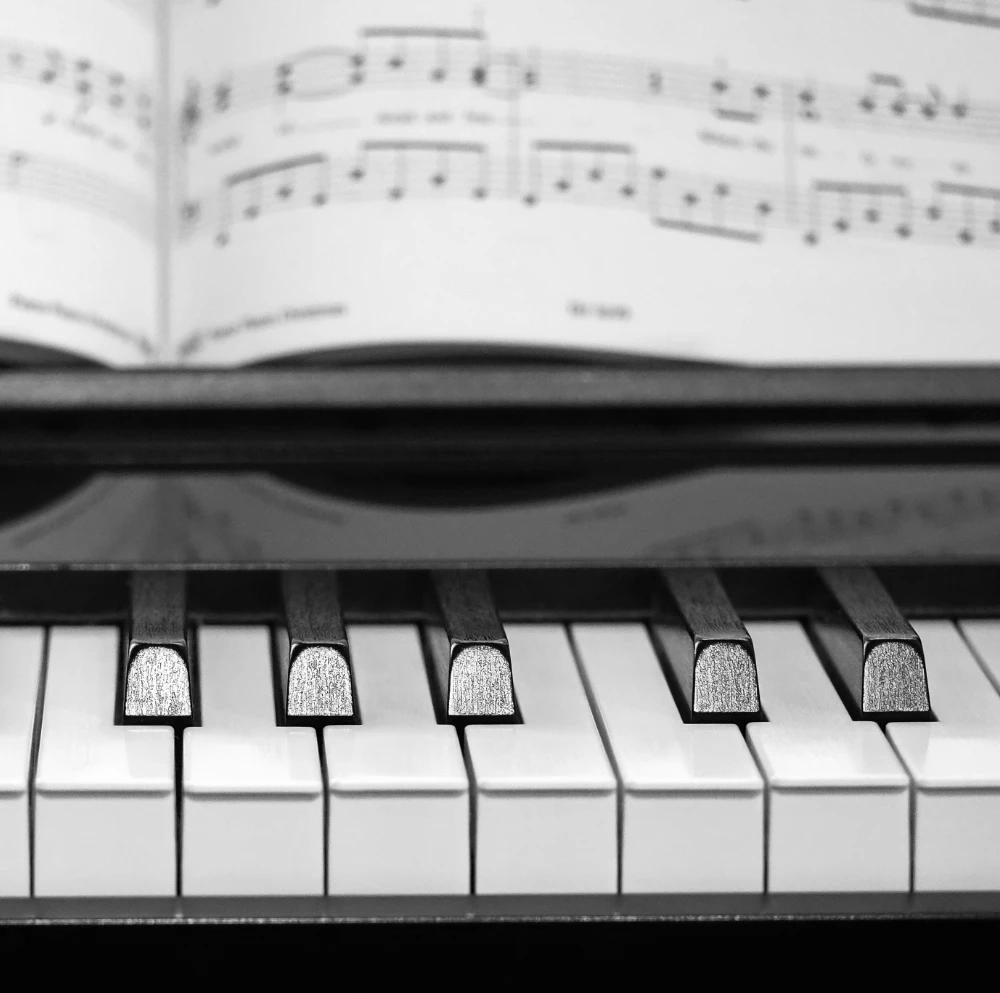

撰文：張瑋語 --更新於2025.07 文章列表

以前彈琴覺得辛苦而沒有特別注意，就是彈鋼琴會不知不覺的提升自己對音樂的基礎，諸如節奏感，音感，認譜速度，左右手協調這些。都對學習提琴有著很大的幫助，也是在前幾年才慢慢的才意識到的事。對於大部分的人來說，同時學習小提琴與鋼琴似乎像是苦力活，有點"被虐"的感覺，但是實際上優點很多，怎麼說呢?
下面我整理了幾個想法，對於已經有接觸兩個樂器的同學，或是正打算同時學習弦樂器與鋼琴的朋友，都可以參考看看。
**彈鋼琴對於音感與節奏感的幫助
簡單來說就是提供了大致上辨別音高的練習，因為在彈鋼琴會反覆練習很多次相同的音高，所以對於音符的定位有一定程度的幫助。節奏感的話，鋼琴其實算是敲擊樂器的一種，對節奏的鍛鍊很扎實。
**彈鋼琴對於認譜速度的幫助
個人認為認譜最困難的首選指揮，一目十行絕對不是開玩笑。再來可能就是鋼琴了，因為音符非常的多，讀譜的速度會在每次練習時順便訓練的。練一練鋼琴，再次回到弦樂時，就會發現讀譜簡單了許多。
**操作協調的訓練
對於弦樂與鋼琴都同樣重要的左右手分工，只是鋼琴還多了腳踏板的使用，增加複雜程度的前提下，演奏者的協調性就會被訓練起來。
**彈鋼琴加速學習和聲理論
探討和聲也就是理解音符之間的相互關係，理解音樂的情緒，暸解旋律之外的音樂語法，對於演奏音樂有非常大的幫助。而和聲在弦樂器上練習時，因弦樂器主軸為旋律樂器，與鋼琴相比，較不容易體會和聲與複音音樂的精妙之處。（弦樂器也有自己的和聲練習場所，就是室內樂與樂團）
鋼琴可以更容易的實現在自己練習時對於和聲理論的訓練。許多作曲家的作品也適合從鋼琴入門，在這些作品中去理解音樂的表達方法，也是鋼琴作為音樂訓練裡非常實用的一環。
結論
長期觀察下來，鋼琴基礎對弦樂學習非常有幫助。同時有學習鋼琴的，或是以前有學過鋼琴的小朋友容易有比較好的音感跟節奏感。當碰到小提琴這種非常仰賴聽力與節奏感的樂器時，有鋼琴底子，更容易建立音樂訓練所需要的基礎。
回上一頁